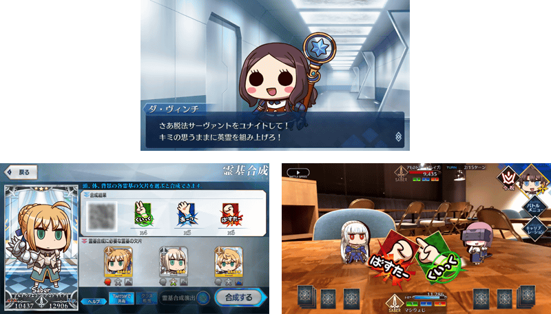

非常感謝您的使用。
這裡是「Fate/Grand Order」營運團隊。
為了記念「Fate/Freedom Order ～我與你的大集合戰爭～」自2021年4月1日(四)釋出，舉辦『「Fate/Freedom Order ～我與你的大集合戰爭～」釋出記念 初次登入獎勵』。
◆舉辦期間◆
2021年3月31日(三) 23:00～4月2日(五) 22:59
※本頁面皆為開發中圖片。會有與實際圖片相異的情況。

下述的期間中進行登入至「Fate/Grand Order」的話，贈送聖晶石10個。
◆領取期間◆
2021年3月31日(三) 23:00～4月2日(五) 22:59
上述期間中，在初次進行登入的時間點，贈送至禮物箱。
◆贈送內容◆
聖晶石 10個
◆贈送對象◆
所有的御主對象
※新御主玩家必須推進至通過「特異點F 炎上汙染都市 冬木 第3節 進行度1」。
※期間內未登入的話無法領取。
※禮物只能領取1次。
「Fate/Freedom Order ～我與你的大集合戰爭～」情報
Fate/Freedom Order
～我與你的大集合戰爭～
(App Store、Google Play)
價格:免費(App內無課金)
※iOS版「Fate/Freedom Order ～我與你的大集合戰爭～」iOS版「Fate/Pixel Wars」在App Store的配信開始需要一些時間。尚未配信的情況，敬請稍加等候。

官方網站URL：https://www.fate-go.jp/fate-fo/ 官方網站URL：https://www.fate-go.jp/fate-fo/